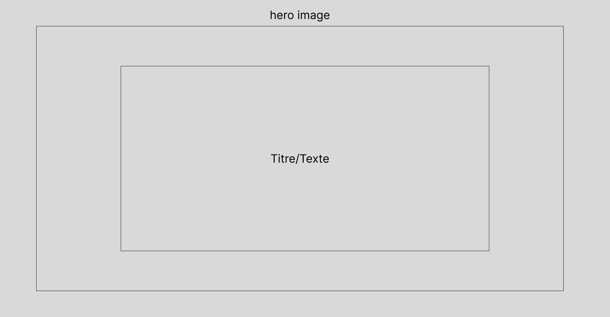

Historique de Développement : De l'Idée au Catalogue Fonctionnel
Bienvenue sur cet aperçu de notre parcours de développement ! Ce projet a démarré avec une idée simple : créer un catalogue d'articles dynamique, facile à gérer et visuellement attrayant. Chaque étape a été cruciale pour atteindre le Point Nemo actuel, où notre base est solide et opérationnelle.
Découvrez comment nous avons transformé un concept en une réalité fonctionnelle, étape par étape, en surmontant les défis techniques pour construire une solution robuste et flexible.
Les Fondations du Projet
Tout a commencé par la mise en place de l'environnement de développement, utilisant XAMPP pour simuler un serveur local. Cela nous a permis de travailler efficacement avec PHP, HTML, CSS et JavaScript, jetant les bases techniques nécessaires.
- Mise en place de l'environnement local : Installation et configuration de XAMPP.
- Structure de base du site : Création des fichiers HTML, CSS et JS principaux.
- Conception initiale : Établissement des maquettes pour les pages d'accueil et d'articles.
Le Cœur Dynamique : Backend et Frontend
L'intégration de PHP a été la clé pour rendre le catalogue dynamique. Nous avons développé un backend capable de "lire" le contenu de vos articles, et un frontend JavaScript pour les afficher.
Le Rôle du PHP (backend/get_articles.php)
- API de données : Création de `get_articles.php` pour fournir les articles au format JSON.
- Extraction intelligente : Capacité à extraire automatiquement le titre, l'introduction et l'image depuis le fichier HTML de l'article.
- **Nettoyage des chemins d'images :** Implémentation d'une logique dans PHP pour nettoyer les chemins d'images (`../images/` vers `images/`) afin qu'ils soient corrects pour les cartes affichées sur `articles.html`.
- Gestion multi-articles : Implémentation du scan du dossier `articles_html/` pour gérer un nombre illimité d'articles.
Le Rôle du JavaScript (articles.html)
- Génération dynamique des cartes : Affichage des articles sous forme de cartes élégantes et responsives.
- Communication asynchrone : Utilisation de `fetch` pour récupérer les données de l'API PHP.
- Navigation fluide : Création de liens fonctionnels vers les articles complets.
Défis et Résolutions : La Maîtrise des Chemins et la Clarté des Fichiers
Le déplacement des fichiers d'articles dans un dossier dédié a introduit des défis de chemins relatifs, mais chaque "crash" a été une opportunité d'apprendre et de solidifier le système.
Principaux points résolus
- **Correction des chemins des ressources internes :** Ajustement crucial des chemins (`../css/styles.css`, `../js/script.js`, `../images/image.png`, `../index.html`) dans les fichiers HTML d'articles eux-mêmes, pour garantir l'affichage correct des styles, scripts et images quand l'article est consulté directement.
- **Indépendance des images :** Remplacement de Picsum par l'intégration d'images locales, garantissant cohérence et contrôle.
- **Logique PHP raffinée :** Confirmation de la correction du script PHP pour qu'il fournisse des URL d'images toujours valides pour les cartes, indépendamment de la profondeur des fichiers d'articles.
- **Optimisation des noms de fichiers d'articles :** Renommage des fichiers d'articles (ex: `exemple-article2.html` vers `feuille-de-route-ce-qu-il-reste-a-accomplir.html`) pour des URL plus propres, descriptives et SEO-friendly, reflétant le contenu de l'article.
Le Point Nemo Actuel
À ce jour, le système est stable et fonctionnel. Il gère dynamiquement les articles stockés dans `articles_html/`, avec des noms de fichiers clairs et une gestion robuste des chemins.
Ceci marque une étape importante dans la construction d'une plateforme de contenu flexible et autonome.
Visions Futures et Autonomie du Projet
Au-delà des prochaines étapes fonctionnelles (comme la dynamisation des dates ou les catégories), une vision à plus long terme explore la possibilité de rendre le projet entièrement autonome. L'idée serait de concevoir un système où le dossier `catalogue/` contiendrait son propre environnement serveur minimal, permettant au site de fonctionner directement depuis une clé USB, sans installation préalable de XAMPP sur la machine hôte.
Ceci représenterait un saut technologique significatif vers une portabilité et une facilité de déploiement maximales.